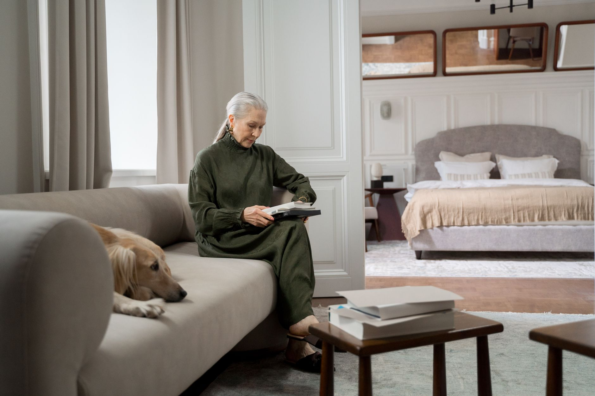
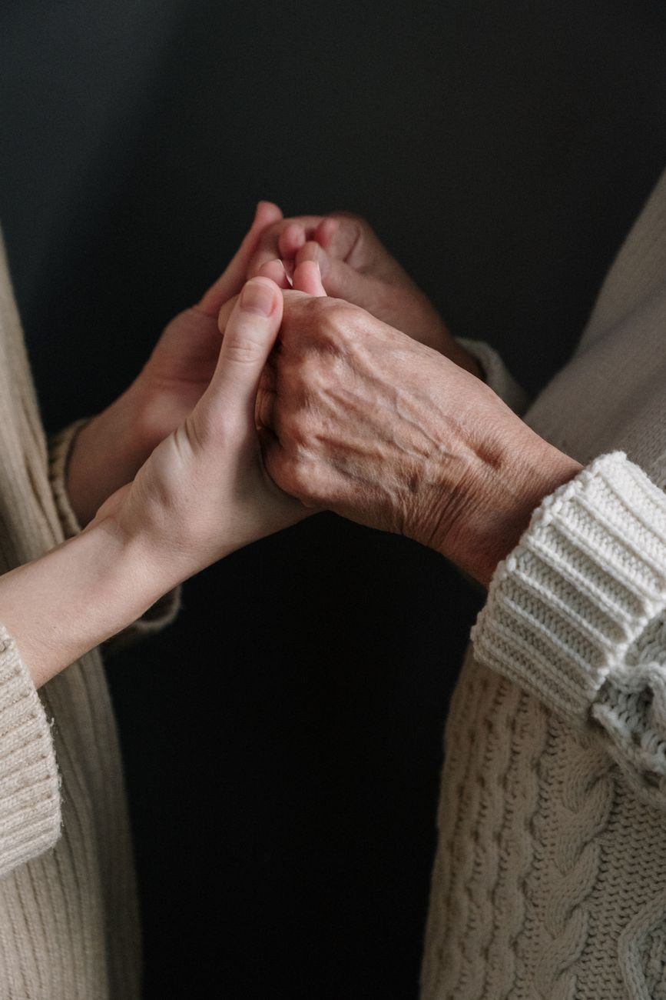
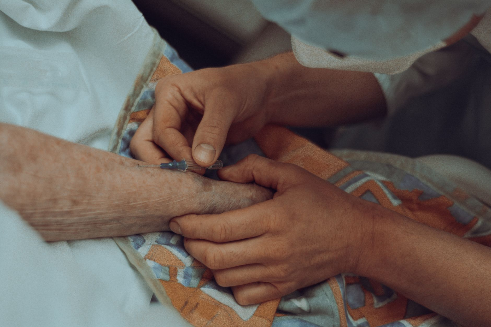
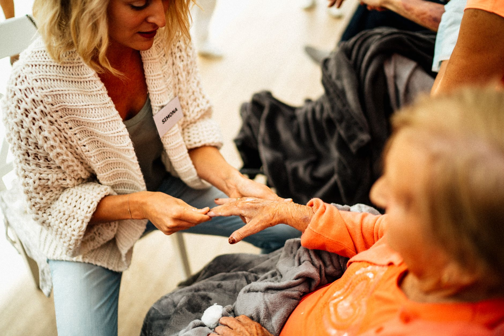
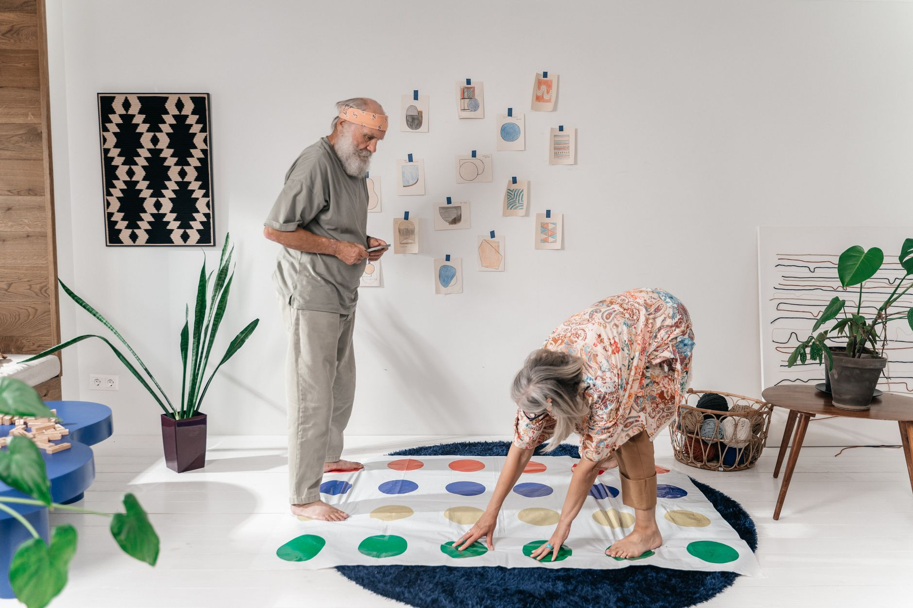
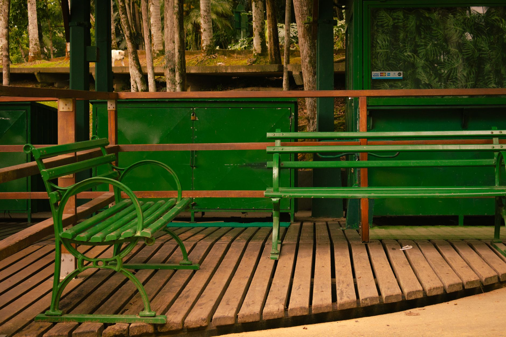

♥ Львів · центр опіки
Догляд, у якому
відчувається тепло.
Центр Опіки Святої Софії — пансіонат для людей похилого віку та з особливими потребами. Цілодобова турбота, медичний нагляд і повага до гідності кожного. Тут не самотньо.
Цілодобовий догляд · медичний нагляд · Львів

01 Про центр
Коли вдома доглянути важко — ми стаємо другою родиною.
Ми розуміємо, як непросто довірити рідну людину. Тому створили місце, де є професійний догляд, медичний нагляд і, найголовніше, — щире людське тепло. Спокійно, з повагою й без байдужості.
-
Турбота 24/7Персонал поруч удень і вночі.
-
Медичний наглядКонтроль стану, прийом ліків, супровід.
-
Повага й гідністьДо кожного — уважно й по-людськи.
02 Догляд
Усе, що потрібно
для спокою рідних



Умови проживання та вартість — за телефоном. Розкажемо все чесно й спокійно. [ЗАПОВНИТИ: умови й вартість]
03 Наша філософія
Старість — не тягар.
Це час, який теж має бути гідним.
Ми доглядаємо так, як хотіли б, щоб доглядали наших рідних: тепло, уважно й без поспіху. Тут вислухають, підтримають і не залишать наодинці з труднощами — ні вашу людину, ні вас.
24/7догляд і персонал поруч
♥тепло й повага до кожного
1дзвінок — і ми все розкажемо
04 Чому обирають нас
Причини довірити
рідну людину
Тепло, а не «послуга»
До кожного — по-людськи й з увагою.
Медичний нагляд
Контроль стану й прийому ліків.
Догляд 24/7
Персонал поруч удень і вночі.
Домашній затишок
Чисто, спокійно й по-домашньому.
Харчування
Збалансоване, з урахуванням потреб.
Спілкування
Активності, увага, жодної самотності.
05 Простір
Місце, де спокійно й затишно

06 Наш підхід
24/7 догляд
персонал поруч завжди
персонал поруч завжди
1дзвінок
і ми чесно все розкажемо
і ми чесно все розкажемо
0байдужості
тільки тепло й повага
тільки тепло й повага
У Львові
Запросимо на зустріч, покажемо центр і чесно розкажемо про умови. Телефонуйте — ми поруч і готові допомогти.
Зателефонувати07 Звернутися
Дізнатися
умови
Залиште контакт — зателефонуємо, вислухаємо ситуацію й чесно розкажемо про умови й вартість. Без тиску.
- МістоЛьвів
- Телефон+38 067 144 66 00
- ПрофільДогляд за людьми похилого віку та з особливими потребами